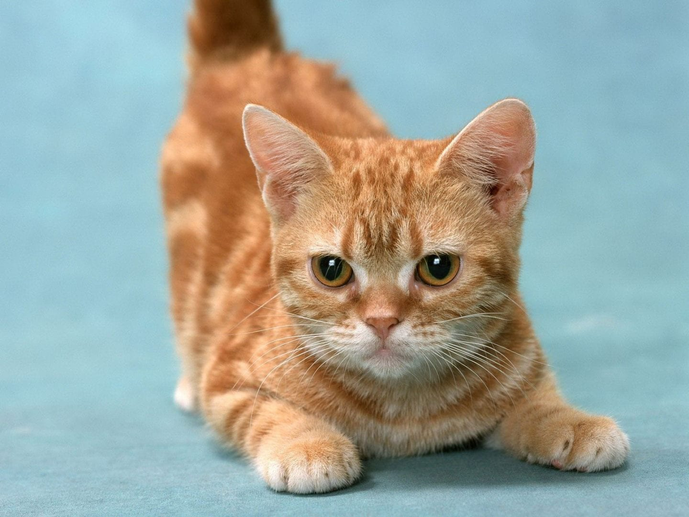
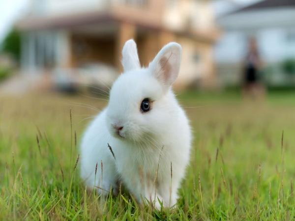

Gatos

Curiosidades de los gatos
- Tienen una flexibilidad y agilidad impresionante, pueden saltar desde más de 3 metros de altura.
- Los gatos pueden rotar sus orejas 180 grados.
- Los gatos pueden pasar hasta 14 horas dormidos.
- Debido a su naturaleza nocturna, los gatos suelen ser mucho más hiperactivos en la tarde.
- En la raza de gato más grande, el macho promedio pesa aproximadamente 9 kilos.
- La audición del gato promedio es al menos cinco veces más aguda que la de un adulto humano.
- Los gatos domésticos pasan cerca del 70 por ciento del día durmiendo, y 15 por ciento del día acicalándose.
Perros

Curiosidades de los perros
- Tu perro es tan inteligente como un niño de dos años.
- Pueden oír 4 veces más que los humanos.
- Físicamente, un perro de un año equivale a un humano de 15.
- Perros y gatos utilizan la misma técnica para beber agua.
- Tienen las glándulas sudoríparas en las patas.
- Es capaz de echarte de menos.
- Su sentido del olfato es de 1.000 a 10 millones de veces mejor que el nuestro
- Sus bigotes le ayudan a ver en la oscuridad
- Algunos no ladran
Conejos

Curiosidades de los conejos
- Los conejitos viven en grupos cuando están en su ambiente natural.
- Pueden llegar a vivir más de 10 años.
- Los bebés conejos se llaman “gazapos”.
- Los conejitos se comen sus desechos.
- Un conejo puede mirar atrás de él sin necesidad de girar la cabeza, pero tiene un punto ciego en frente de su cara.
- Los conejos domésticos no pueden juntarse con conejos salvajes.
- Los conejos necesitan comer heno, ya que ayuda a su sistema digestivo.
- Existen más de 150 diferentes colores para su pelaje, pero sólo 5 colores para sus ojos (marrón, azul, gris azulado, veteado y color rosa).